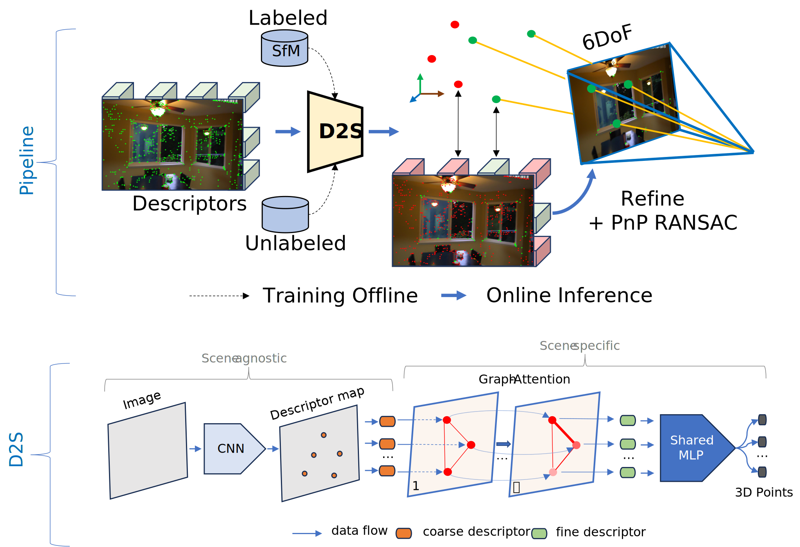
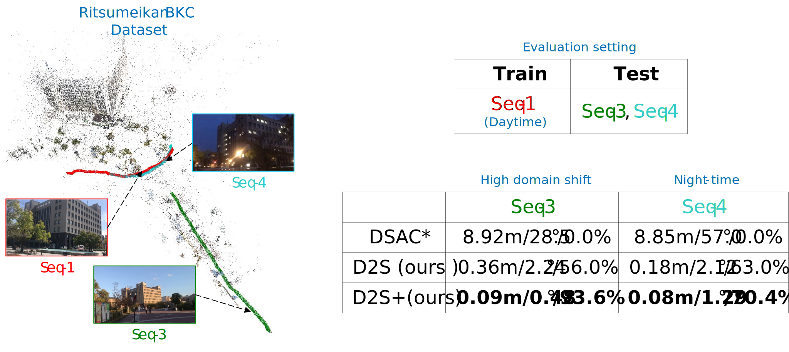

Abstract
D2S can predict reliability descriptors and their 3D coordinates for high accuracy re-localization.
State-of-the-art visual localization methods mostly rely on complex procedures to match local descriptors and 3D point clouds. However, these procedures can incur significant cost in terms of inference, storage, and updates over time. In this study, we propose a direct learning-based approach that utilizes a simple network named D2S to represent local descriptors and their scene coordinates. Our method is characterized by its simplicity and cost-effectiveness. It solely leverages a single RGB image for localization during the testing phase and only requires a lightweight model to encode a complex sparse scene. The proposed D2S employs a combination of a simple loss function and graph attention to selectively focus on robust descriptors while disregarding areas such as clouds, trees, and several dynamic objects. This selective attention enables D2S to effectively perform a binary-semantic classification for sparse descriptors. Additionally, we propose a new outdoor dataset to evaluate the capabilities of visual localization methods in terms of scene generalization and self-updating from unlabeled observations. Our approach outperforms the state-of-the-art CNN-based methods in scene coordinate regression in indoor and outdoor environments. It demonstrates the ability to generalize beyond training data, including scenarios involving transitions from day to night and adapting to domain shifts, even in the absence of the labeled data sources.
Pipeline overview

Given a set of images $\{\mathbf{I}^{i}_{\mathcal{T}}\}_{i=1}^{n}$ and its reconstructed SfM model $\mathcal{E}$, we aim to develop a sparse regression module, which can encode entire environment $\mathcal{E}$ by a compact function $\mathfrak{F}(.)$, where $\mathfrak{F}$ is the prorposed D2S neural network as above. The proposed function $\mathfrak{F}(.)$ inputs local descriptors $\mathbf{D}^{i} \in \mathbb{R}^{K \times D}$ extracted from $\mathbf{I}^{i}$ and outputs their corresponding 3D coordinates $\mathbf{W}^{i} \in \mathbb{R}^{K \times 4}$ (an additional dimension for reliability detection). The ultimate goal of the proposed module is to perform visual re-localization, a task of estimating camera pose $\mathbf{T} \in \mathbb{R}^{4\times4}$ of the query image $\mathbf{I}_{q}$.
Results on GreatCourt Cambridge - 8000$m^{2}$ - median error: 38cm, 0.18$^{\circ}$
On the left are the predicted 3D cloud maps. The camera poses red represent the ground truth, while the blue ones are estimated by D2S. On the right are the reliability prediction results. The green dots indicate good features for localization.
Results on 7scenes Chess - 6$m^{3}$ - median error: 1.7cm, 0.57$^{\circ}$
Results on Indoor6 scene1 - 140$m^{3}$ - median error: 5.6cm, 0.9$^{\circ}$
Results on BKC WestWing & comparison with DSAC*

We show the median errors obtained by DSAC* and D2S on the BKC WestWing dataset. The errors are shown in meters/degrees/accuracy (threshold of 0.5m & 10$^{\circ}$). D2S+ is the proposed self-supervised updating version with unlabeled data.
Visualization of estimated camera poses (Seq-3): The green poses are estimated by DSAC*, the blue ones are the results of our D2S+, while the red poses are the ground truths. We also visualize the 3D cloud model predicted by D2S+.
Visualizations on the attention weights in different graph layers

We visualize the attention weights as the blue rays for three attention layers of 1, 3, and 5. We retain only attention weights within the threshold of $\alpha_{ij} > 5\times10^{-4}$. The visualization for attention weights demonstrates that the D2S has successfully learned to focus on distinctive or reliable regions using 5 graph layers. This then results in the capability of predicting robust features and their 3D coordinates.
Citation
@article{bui2023d2s,
title={D2S: Representing local descriptors and global scene coordinates for camera relocalization},
author={Bach-Thuan Bui, Dinh-Tuan Tran, Joo-Ho Lee},
journal={ArXiv},
year={2023}
}